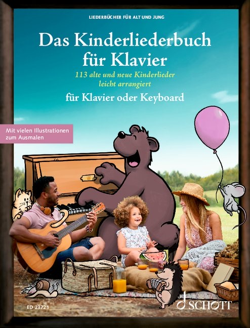
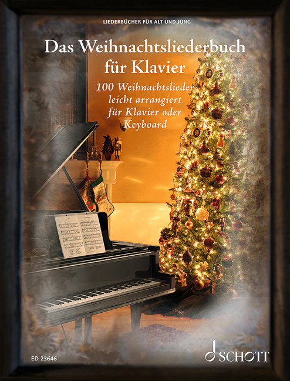

Für alle, die lieber am Klavier begleiten: Das Kinderliederbuch und das Weihnachtsliederbuch gibt es bereits mit ausnotierter Klavierbegleitung. Ab Ende September 2026 erscheint zusätzlich das Fetenbuch für Klavier.

113 alte und neue Kinderlieder für die Kita und zu Hause – auch für Klavier / Keyboard.

100 Weihnachtslieder für eine stimmungsvolle Weihnachtszeit – auch für Klavier.
100 Hits leicht arrangiert für Klavier oder Keyboard – erscheint in Kürze.